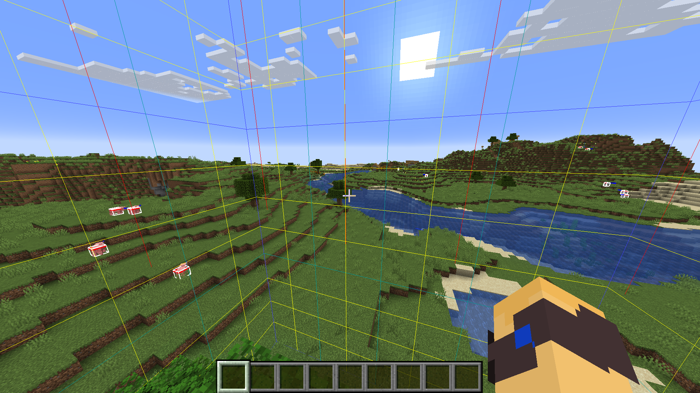

Das Perfekte Setup
Zurück zur Startseite
Startseite
Empfohlene Einstellungen:
Spiele in der Version 1.16.1
Stelle eine Hohe Render-Distance und FOV (Field of View) ein
Zeige Hitboxen und Chunkborders mit F3 + G und F3 + B an
eine tiefe Empfindlichkeit ist empfehlenswert
So sollte es dann aussehen:

Mods die du installieren solltest:
Fabric API damit die Mods funktionieren
FastReset schnell eine Welt resetten
SpeedRunIGT Ingame Timer
Sodium deutlich bessere Performance
Starlight überarbeitet die Light-Engine und bringt bessere Performance
MCSR Ranked Ranked und Casual mit anderem Spieler spielen
Hier kannst du die Mods installieren:
Modifikationen